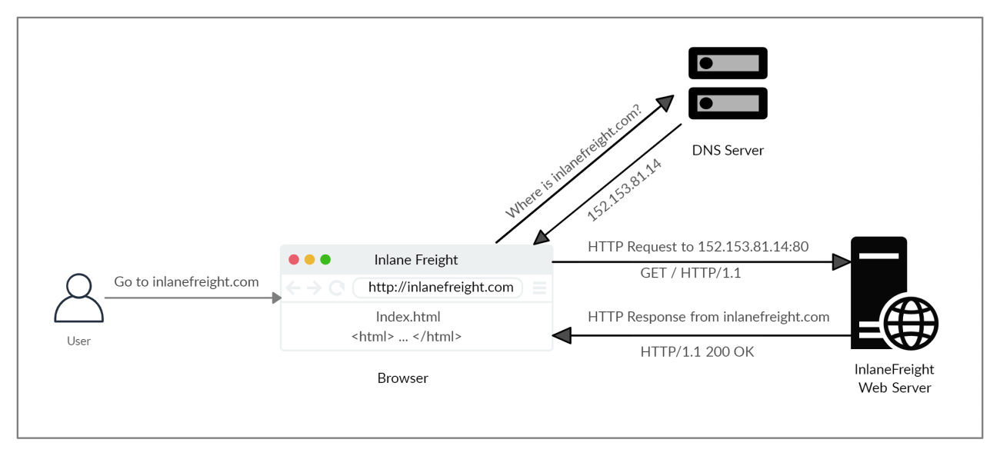

HTTP: how it works
1. The first time a user enters the URL (inlanefreight.com) into the browser, it sends a request to a DNS (Domain Name Resolution) server to resolve the domain and get its IP.
2. The DNS server looks up the IP address for inlanefreight.com and returns it.
All domain names need to be resolved this way, as a server can't communicate without an IP address.
Note: Our browsers usually first look up records in the local '
/etc/hosts' file, and if the requested domain does not exist within it, then they would contact other DNS servers. We can use the '
/etc/hosts' to manually add records to for DNS resolution, by adding the IP followed by the domain name.
By default, servers are configured to return an
index file when a request for / is received.
Bibliography:
https://academy.hackthebox.com/